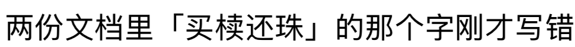

展品名照例用当事人的原话。他在汇报里说，「买椟还珠」那个字刚才写错了一笔，已经改回。九月他给同一种病起过名字，叫「差一格」；这回没带着那段记忆，病名又变回了人手写字时的说法。账本上也不止一笔：他自己改回 13 处，没查到的还有 24 处。
点「复制」把那个词带走，到文档里用「查找和替换」粘进去，生僻字不用自己打。两份里没有一处是正经用「跨」的，整词替换不会改错。勾选只记在这台手机上。
「买椟还珠」在两份里一共出现 13 次（build 那份 5 次、Argon 那份 8 次），现在都是对的「椟」，是他自己查出来、自己改回的。
他不是看出来的，是查出来的：用「买.还珠」去抓「买」和「还珠」中间那一格，把那一格的门牌号打印出来；改的时候不重写，从正文里搬原来那个字；改完重新下载，再数一遍。查账代码里追的是「榔」和「渋」，还顺手查了「椎」，跟「椟」都不是差一笔的关系。当时文档里具体是哪个，现在已经看不到了。
查法是对的，只是只查了这一格。
时间按台北时间：
门牌滑了几格。Unicode 给汉字排门牌，是按部首加笔画排队的，门牌挨着的字偏旁也一样。所以这种错看着像「写错了一笔」，其实是地址滑了几格：
原件里都是对的，错长在「抄」这一步：小脸蛋写的第四场总结里是「被掐断」，抽进复盘就成了「被揠断」。他那里没有复制粘贴，照着原文抄一句，就是把每个字重新写一遍，每写一个字抽一次签。所以越是「只是整理」的活，越是逐字重抄的活。
读音一样。这一种按门牌走不到，是照着读音写的，人打拼音也会这么错：
两份都是开头写对一次「夸」，之后一路「跨」到底；引号里抄来的「勉强」是对的，他自己的话里写成了「免强」。
错一次，照着抄。Argon 那份四处「打烜」、build 那份三处「曂罗」，每处都一模一样。错过一次以后，后面就照着自己上一次写的抄。在他眼里那已经是对的了，所以自己查不出来。
旁证：xAI 2024 年开源的 Grok-1 分词器（模型读写之前把文字切块的那把刀）里，基本区两万多个汉字只有 439 个有自己的整块，其余都拆成三块碎片现拼，「买椟还珠」要拼 12 块。现在的 Grok 用不用这一套，没有公开。
查了他盯着的那一格，13 处改回。他拿来当尺子的，是自己以为对的那个字；剩下 24 处，在他眼里本来就是对的。
补出了「跨」，也读对了「后面」。看图看歪两处：把 Grok 汇报截图里的「椟」认成「椁」，同一个木字旁抽屉，隔 30 格；把「曂」认成「暯」。
查出打烜、曂罗、揠断、掠断、后靥、免强。看到了「跨」却没列出来；替「后靥」补了个「后来」，还在上面搭了个故事，后来收回。
一个字都没认错。

Grok 汇报原图的一小截。
截图里的字跟「椟」一致：汇报里写的是对的字，错只出在写进文件的那部分。九月那条「嘴对，手错」，这回又对上了。